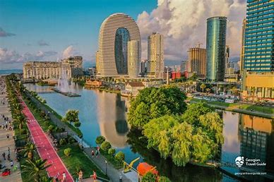

get to know georgia
ბათუმი — ქალაქი და მუნიციპალიტეტი[5] საქართველოში, არის აჭარის ავტონომიური რესპუბლიკის ადმინისტრაციული ცენტრი. ბათუმი არის მოსახლეობის რაოდენობით მეორე ქალაქი საქართველოში, მსხვილი საერთაშორისო ნავსადგური შავი ზღვის სამხრეთ-აღმოსავლეთ სანაპიროზე, მნიშვნელოვანი სამრეწველო, კულტურული და ტურისტული ცენტრი საქართველოში.
ბათუმი გაშენებულია ღრმა, კარგად დაცული ბუნებრივი ნავსაყუდელის ბათუმის ყურის ნაპირას, ზღვის დონიდან 3 მეტრზე, თბილისიდან 350 კმ-ში (რკინიგზით). 2014 წლის აღწერის მონაცემებით, ქალაქში ცხოვრობს 152 839 ადამიანი.
ქალაქი გადაჭიმულია ჩრდილო-აღმოსავლეთიდან სამხრეთ-დასავლეთისაკენ 7 კილომეტრზე. ქალაქის ფართობი შეადგენს 6494,31 ჰექტარს. ფართობის მიხედვით ბათუმი საქართველოში მესამე ქალაქია.[6] ბათუმის ძირითადი ნაწილი სამხრეთიდან ეკვრის ყურეს და გაშენებულია კახაბრის ვაკეზე ის, დანარჩენი ნაწილი ყურის აღმოსავლეთით და ჩრდილო-აღმოსავლეთით — მდინარეების ბარცხანისა და ყოროლისწყლის გასწვრივ მდებარეობს, ბათუმის ტერიტორია ასევე გრძელდება მდინარე ჭოროხის სამხრეთით.
ბათუმის ჰავა ზღვის ნოტიო სუბტროპიკულია. იცის თბილი, უთოვლო ზამთარი და თბილი ზაფხული. საშუალო წლიური ტემპერატურაა 14,5 °C, იანვარში — 7,1 °C, აგვისტოში — 23,2 °C. ნალექები — 2560 მმ წელიწადში. შეფარდებითი სინოტივე — 81 %. ხშირია კოკისპირული წვიმა. თოვლი იშვიათად მოდის და მალე დნება. სანაპირო ზოლში კარგად არის გამოხატული ზღვის ბრიზები, რის გამოც სიცხე ნაკლებად შეიგრძნობა.
ბათუმის ტერიტორიაზე არის ბუნებრივი ტბა (ფართობი 0,06 კმ²), რომელიც ამჟამად ბათუმპარკის ნაწილია. ქალაქსა და მის მიდამოებში გავრცელებულია მრავალნაირი სუბტროპიკული მცენარე. ჭარბობს ხელოვნურად გაშენებული პარკები, ჩაის პლანტაციები და ციტრუსოვანთა ნარგავები. გორაკ-ბორცვებზე აქა-იქ შემორჩენილია კოლხური ბუნებრივი ტყე და ბუჩქნარი. მცენარეულობის სიმდიდრითა და სიმრავლით გამოირჩევა ბათუმის ბოტანიკური ბაღი.
ზღვის წყლის საშუალო წლიური ტემპერატურა ნაპირთან 16,7 °C-ია. სამკურნალო ფაქტორია კლიმატოთერაპია და ზღვაში ბანაობა. ზღვის წყალი გამოირჩევა მაღალი მინერალიზაციით. სამედიცინო ჩვენება: სასუნთქი გზების არატუბერკულოზური დაავადებანი, ნერვული სისტემის ფუნქიური და გულ-სისხლძარღვთა დაავადებანი, ჰიპერტონიული დაავადება, ლიმფადენიტი, სისხლნაკლებობა. სეზონი გრძელდება მთელ წელს, ბანაობის სეზონი მაისიდან ოქტომბრამდე. ქალაქის ტერიტორიაზე კეთილმოწყობილი საკურორტო ადგილებია მახინჯაური, მწვანე კონცხი, გონიო, კვარიათი.
.jpg)
ბოტანიკური ბაღი, დელფინარიუმი, ცირკი და „ბათუმის რივიერა“ — დასასვენებელი და გასართობი კომპლექსი შავი ზღვის სანაპიროზე.
ბათუმსა და მის მიდამოებში, მდინარე ყოროლისწყლის შესართავთან, მის მარცხენა ნაპირზე აღმოჩენილი არქეოლოგიური მასალა ადასტურებს, რომ ეს მიდამოები ადამიანის მიერ ათვისებული იყო ჯერ კიდევ ძვ. წ. II - I ათასწლეულების მიჯნაზე. ადრინდელ ანტიკურ ხანაში ბათუმის მიდამოები კოლხეთის სამეფოს საზღვრებში შედიოდა. აქაურ მოსახლეობას გაცხოველებული სავაჭრო ურთიერთობა ჰქონდა მეზობელ და შორეულ ქვეყნებთან. ამ პუნქტს ძველი ბერძნები მოიხსენიებდნენ ბათუსის სახელით. II საუკუნეში რომის იმპერატორ ადრიანეს დროს დღევანდელი ბათუმის ტერიტორიაზე რომაელთა სამხედრო ბანაკი იყო. მოგვიანებით ის ეგრისის სამეფოს ნაწილი გახდა. ადრინდელ ფეოდალურ ხანაში, სხვა ზღვისპირა პუნქტებისაგან განსხვავებით, ბათუმი დაწინაურებული იყო, რასაც ხელს უწყობდა მისი მდებარეობა ქვეყნის შიდა რაიონებისაკენ მიმავალი გზების დასაწყისში. VI საუკუნეში ბიზანტიის იმპერატორმა იუსტინიანე I-მა აქ ლოსორიონის ციხე (ძვ. ბერძნ. Λοσόριον, მოგვიანებით ცნობილი, როგორც „თამარის ციხე“) ააგო,[9] რომელიც მისი სტრატეგიული ადგილმდებარეობიდან გამომდინარე მნიშვნელოვან როლს ასრულებდა ეგრისის დიდ ომებში სასაზღვრო პუნქტების გამაგრებაში. VIII საუკუნის ბოლოს ის აფხაზთა სამეფოს ნაწილი გახდა, 1008 წლიდან კი საქართველოს სამეფოს შემადგენლობაში შევიდა. ფეოდალურ ხანაში ბათუმის ციხის გარშემო არსებობდა სოფლის ტიპის დასახლება, მაგრამ იგი ქალაქადაც იხსენიება (ამბროჯო კონტარინი).